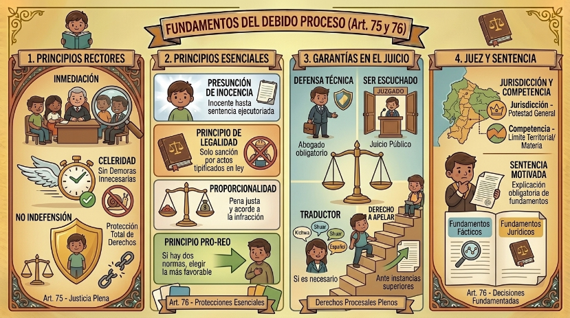

Cuando entramos al terreno judicial, la Constitución nos cuida las espaldas con el Artículo 75. Básicamente, nos dice que la justicia no puede ser eterna ni un trámite fantasma. Aquí entran dos reglas clave: la inmediación (las partes deben dar la cara y estar presentes ante la autoridad) y la celeridad (los juicios y trámites tienen que ser ágiles, sin dar vueltas innecesarias).

El sagrado derecho a la defensa (Art. 76)
Nadie puede ser dejado en la indefensión. El artículo 76 es como el escudo principal de cualquier persona acusada de algo. Primero, nos garantiza la presunción de inocencia; es decir, eres inocente hasta que una sentencia ejecutoriada (ya final y firme) diga lo contrario.
También establece el principio de legalidad: si no está escrito en la ley como infracción, no es delito. Además, obliga a que las penas sean justas mediante el principio de proporcionalidad (el castigo debe ser proporcional a la infracción). Y si alguna vez hay un choque entre dos leyes penales sobre un mismo tema, ¡ojo al dato!, se aplica el principio pro-reo: el juez está obligado a elegir la ley que más favorezca al sentenciado.
Garantías básicas en cualquier juicio
El numeral 17 de este artículo nos da una lista de derechos inquebrantables. Para empezar, tenemos derecho a contar con el tiempo y los medios para preparar nuestra defensa, a ser escuchados y a que los juicios sean públicos (salvo que haya menores de edad involucrados).
Nadie nos puede interrogar sin nuestro abogado (privado o defensor público), y si no hablamos el idioma, el Estado debe ponernos un traductor gratis. Además, si la sentencia no nos convence o creemos que vulnera nuestros derechos, siempre tenemos la opción de apelar (recurrir el fallo) ante instancias superiores.
¿Quién nos juzga y cómo lo hace?
No cualquier persona puede dictar sentencia. Debemos ser juzgados por un juez imparcial que tenga dos cosas: Jurisdicción (el "súper poder" general que les da el Estado para administrar justicia) y Competencia (el límite de ese poder; es decir, solo pueden juzgar en su territorio o en su especialidad, como familia, penal, etc.).
Cuando estos jueces emiten su decisión final, tienen la obligación de motivar su sentencia. No pueden simplemente decir "eres culpable". Tienen que fundamentar los hechos (relatar cómo sucedió todo) y el derecho (citar los artículos exactos de la ley que se rompieron). Solo así sabemos que la justicia fue transparente.